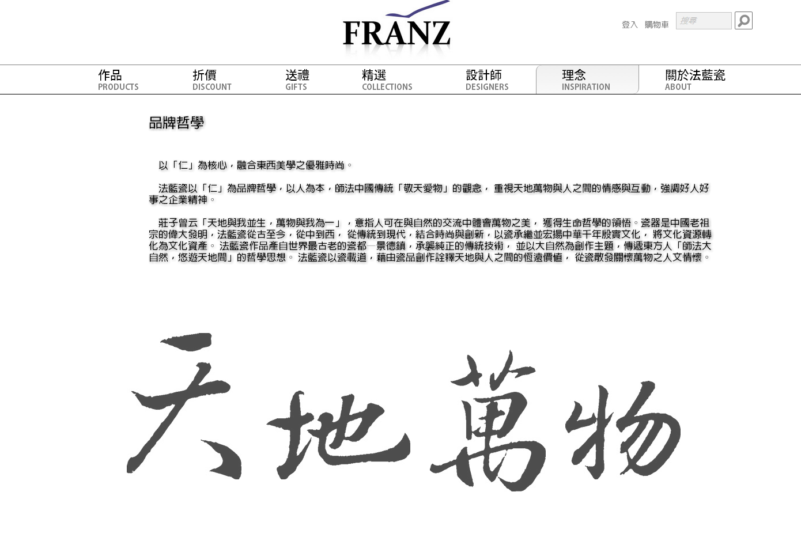
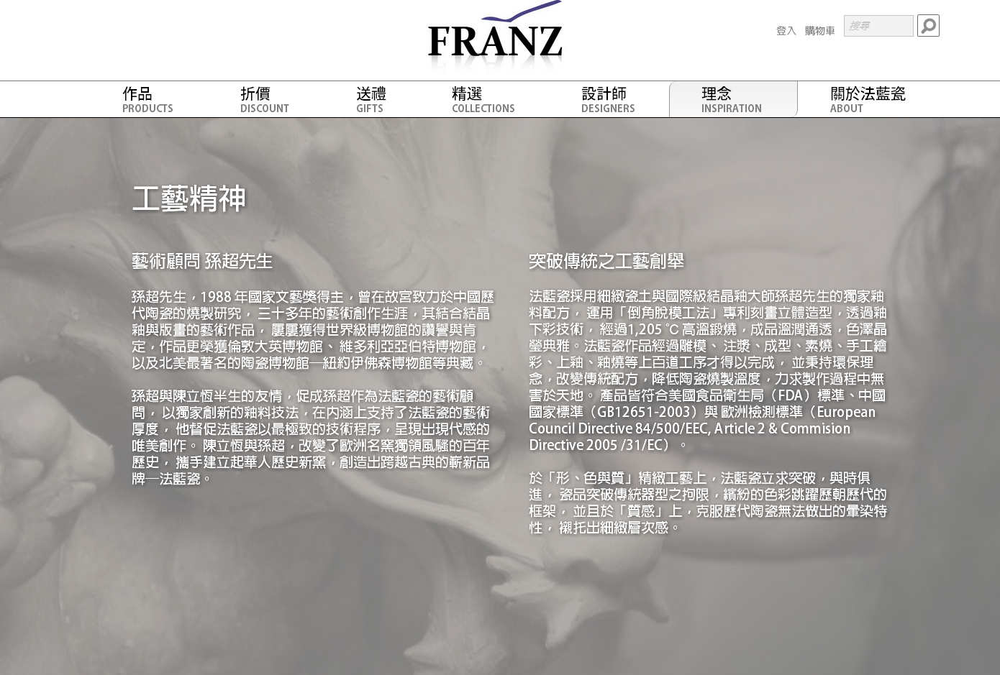
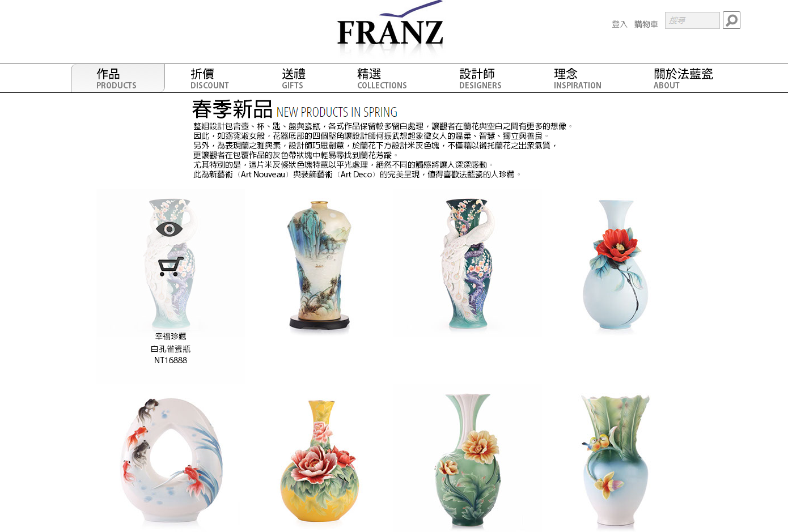
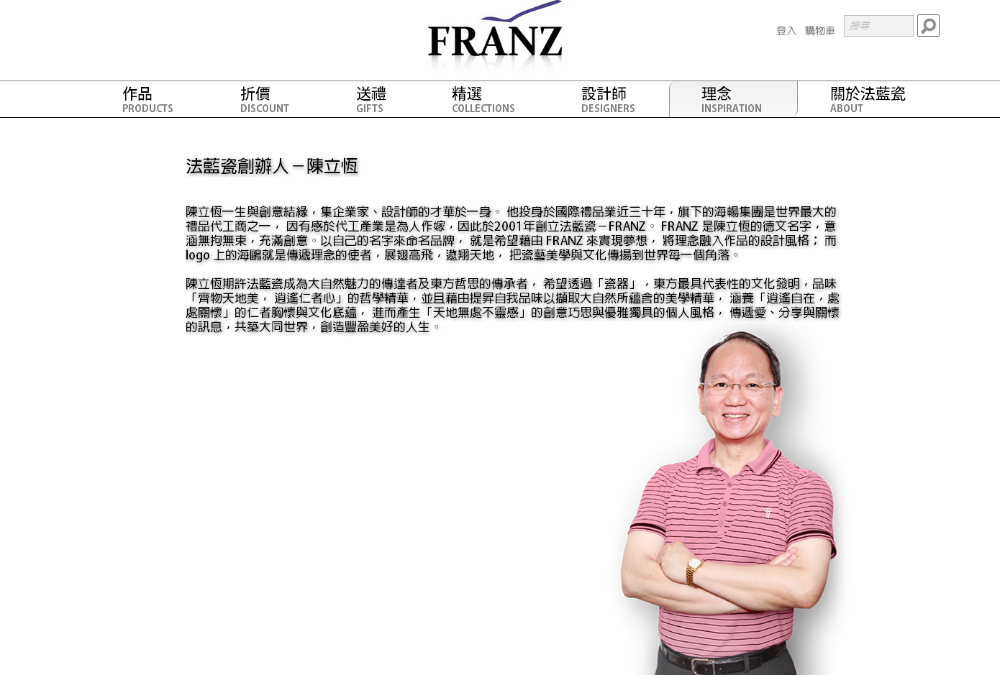
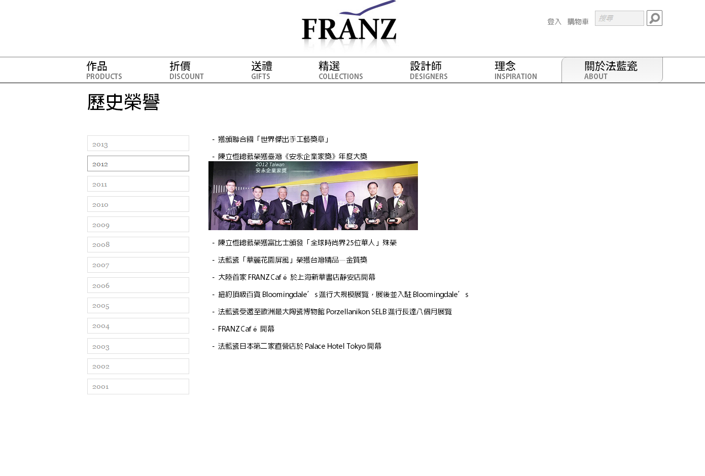

網站企劃與設計
2015
創作說明
「網站企劃與設計」課程期末習作，替一間商業公司設計網站，我挑選的是「法藍瓷」。
為凸顯法藍瓷商品的精緻典雅，網站以純白、線條簡潔的設計為主。又商品特性為國際高級禮品，產品傳達出的形象是商品價值非常重要的要素之一，所以在品牌哲學及工藝精神的頁面以動畫及圖像營造出獨樹一格、尊爵不凡的氣質，並在商品瀏覽頁面強調各系列商品設計理念及所傳遞的意象，增進顧客送禮的意願與動機。
創作工具
Adobe Muse, Photoshop
展示影片

首頁
首頁以大圖輪播呈現當季主題商品，在使用者一進入便能立刻聚焦，達到推薦商品的訴求，並以主題商品為參考基準，尋找更合適的商品。

品牌哲學
法藍瓷主打高級禮品，並以中國傳統意象為主軸，行銷國際。因此，品牌理念是消費者考量商品是否值得購買的附加價值，於是在這個頁面以呈現法藍瓷的品牌哲學「仁」及「師法自然」，並將天地萬物的意象視覺化，以書法結合動態，試圖描繪出中國書畫形而上的高深意境。

工藝精神
除了品牌形象外，高級工藝品核心價值便是技術，因此在頁面詳述技術工法，強調工藝品質上的追求，同時兼顧環保的責任。

商品頁面
以純白頁面，不加以贅述的風格，展現瓷器的簡潔大器。詳細資訊跟加入購物車選項，以圖片按鈕表現，並在hover之後出現。

創辦人介紹
以創辦人經歷及思維，介紹法藍瓷緣起以及理念緣由。

歷史榮譽
以年表方式，呈現法藍瓷歷年獲獎。